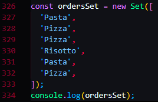

Unique, Order-wise Irrelevent
This clears everything in the set
No needs and no ways to retrive something out of the set
We only need to know if the set contains a certain thing
Conversion
Culculate the number of unique elements in an array


 This clears everything in the set
This clears everything in the set